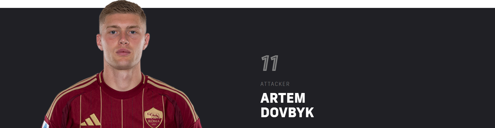
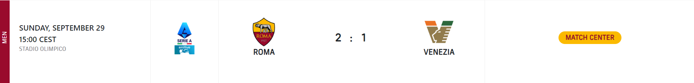

TEAM HISTORY
AS Roma was founded in the spring of 1927 when Italo Foschi initiated the merger of three older Italian Football Championship clubs from the city of Rome: Roman FC, SS Alba-Audace and Fortitudo-Pro Roma SGS. Foschi was an important Roman representative of the ruling National Fascist Party.
THE LAST VICTORY
